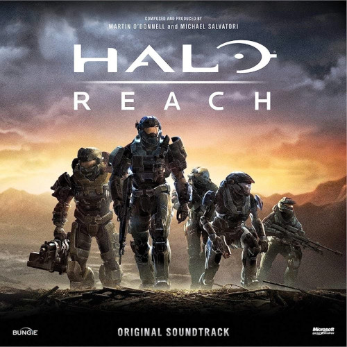
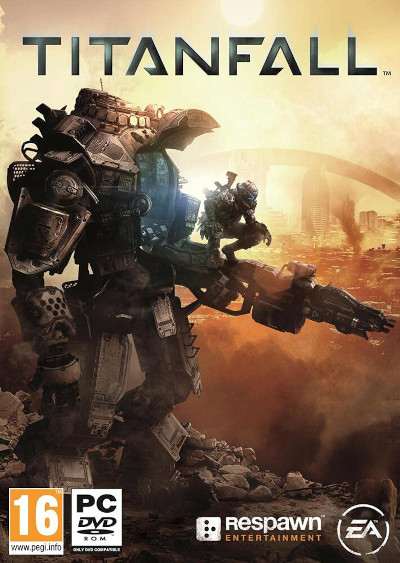
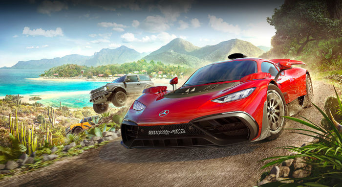

O que a marca Xbox representa para os seus fãs
Uma breve história
Xbox é uma marca de consoles de jogos eletrônicos criada e patenteada pela Microsoft. O nome Xbox é incluído em uma série de consoles desenvolvidos pela Microsoft, desde a sexta geração até a nona geração, bem como o serviço on-line Xbox Live e Xbox Game Pass. A marca foi introduzida pela primeira vez em 15 de novembro de 2001, nos Estados Unidos, com o lançamento do console Xbox.
O primeiro console da série, o Xbox, foi o primeiro console oferecido por uma empresa norte-americana após o Atari Jaguar em 1996. Ele chegou a mais de 24 milhões de unidades vendidas em 10 de maio de 2006. Seu sucessor, o Xbox 360, foi lançado em 22 de novembro de 2005 e descontinuado em 20 de abril de 2016. O sucessor do Xbox 360, o Xbox One, foi anunciado em 21 de maio de 2013 e lançado em 22 de novembro do mesmo ano. Abaixo veja o primeiro episódio do documentário Power On, que aprofunda a história da marca Xbox.
Clique para ver a playslist completa
Os maiores lançamentos de jogos da marca
Ao longo de sua história, o Xbox lançou diversos jogos e consoles que se tornaram marcos na indústria dos videogames. Desde seu primeiro lançamento em 2001, a Microsoft tem impressionado os jogadores com experiências memoráveis e títulos de destaque. Neste texto, vamos explorar alguns dos maiores lançamentos da história do Xbox.
Halo Combat Evolved

Um dos primeiros jogos a cativar os jogadores no console Xbox original foi "Halo: Combat Evolved", lançado em 2001. Desenvolvido pela Bungie Studios, o jogo de tiro em primeira pessoa se tornou um sucesso instantâneo, aclamado pela sua jogabilidade, enredo envolvente e modo multiplayer competitivo. "Halo" se transformou em uma franquia de enorme sucesso, com várias sequências e spin-offs ao longo dos anos.
Gears of War

Em 2005, a Microsoft lançou o Xbox 360, um console que mudou a forma como as pessoas jogavam. Um dos maiores lançamentos para o Xbox 360 foi "Gears of War", lançado em 2006. Desenvolvido pela Epic Games, o jogo de tiro em terceira pessoa impressionou com seus visuais impressionantes, mecânica de jogo inovadora e modo cooperativo intenso. "Gears of War" estabeleceu uma nova referência para jogos de ação no Xbox 360.
Mass Effect

Outro lançamento que causou um impacto significativo foi "Mass Effect", lançado em 2007. Desenvolvido pela BioWare, o jogo de RPG espacial apresentou um vasto universo, escolhas morais complexas e personagens memoráveis. "Mass Effect" conquistou uma base de fãs leais e gerou duas sequências igualmente aclamadas.
Halo Reach
Em 2010, a franquia "Halo" retornou com um novo capítulo: "Halo: Reach". Desenvolvido pela Bungie Studios, o jogo foi elogiado por sua história emocionalmente poderosa e multiplayer viciante. "Halo: Reach" marcou o fim da era Bungie para a franquia e deixou uma marca indelével na história do Xbox.
Titanfall
Em 2013, a Microsoft lançou o Xbox One, trazendo consigo uma nova geração de jogos e recursos. Um dos maiores lançamentos para este console foi "Titanfall", lançado em 2014. Desenvolvido pela Respawn Entertainment, o jogo de tiro em primeira pessoa combinou habilmente combate frenético com ação de parkour e batalhas de robôs gigantes. "Titanfall" foi um sucesso instantâneo e ajudou a solidificar o Xbox One como uma plataforma atrativa para os jogadores.
Forza Horizon
Além disso, é impossível falar sobre os maiores lançamentos da história do Xbox sem mencionar a série "Forza Horizon". Os jogos desta franquia de corrida de mundo aberto, desenvolvida pela Playground Games, proporcionaram uma experiência de condução imersiva e gráficos impressionantes. Cada novo lançamento da série foi aclamado pela crítica e pelos jogadores, estabelecendo-se como um dos destaques do catálogo do Xbox.
Esses são apenas alguns exemplos dos maiores lançamentos da história do Xbox. A Microsoft continuou a lançar jogos de destaque ao longo dos anos, trazendo novas e xperiências e franquias aclamadas. Com a próxima geração de consoles Xbox Series